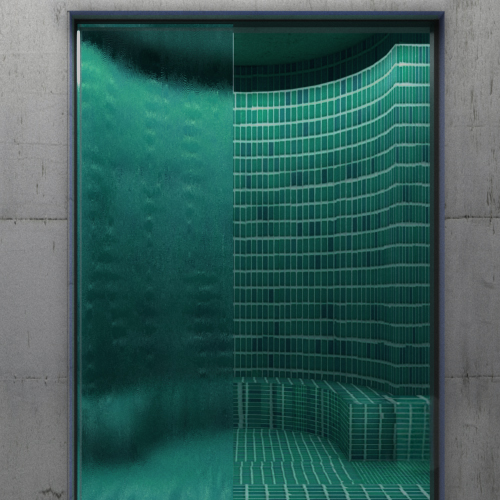

Ritual Concrete

Il progetto fa parte della riqualificazione del Villaggio Olimpico di Roma e nasce con l'obiettivo di ridare valore a uno spazio oggi inutilizzato. La proposta è una spa ispirata ai bagni turchi, pensata come luogo di benessere e rigenerazione in dialogo con l'architettura esistente.
L'ambiente è interamente realizzato in cemento: pavimenti e pareti condividono la stessa finitura, mentre archi e colonne, in una tonalità più scura, scandiscono lo spazio richiamando le geometrie dell'architettura termale orientale. La forma complessiva rievoca il Tempietto del Bramante, reinterpretato in chiave contemporanea per unire tradizione e nuova funzionalità.
Un ambiente in cui luce, materia e simmetria lavorano insieme per offrire un'esperienza sensoriale rilassante, trasformando un vuoto urbano in un luogo significativo e pieno di identità.


